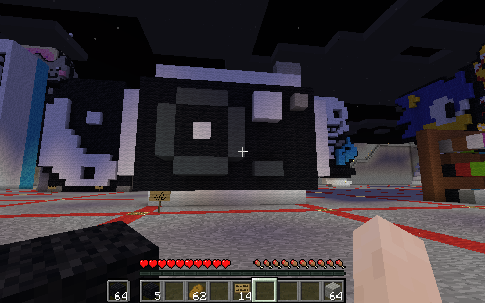

I chose to make a camera as my cultural significance because I love photography. To me photos are my memories, I don’t have as good of a memory as other people and looking at photos helps me remember. They are my memories and my past. I enjoy looking at the photos and what goes on within them, because they all have their own special messages and different feeling that comes with them. I also love holding a camera, it makes me feel professional and that I have a purpose. I have been doing photography since 8th grade, that was when I was yearbook and started to relish it. Photography has become my hopes and dreams, even though I still need to work on taking photos, because I am trying to get better and hopefully make a career out of it.
These are 3D prints of my minecraft scultpture, a camera.